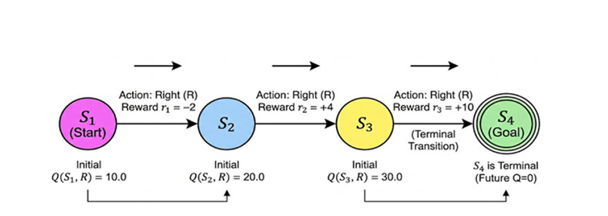

Consider the following state transition diagram where an agent moves through states S₁ → S₂ → S₃ → S₄ (terminal) by taking action Right (R) at each state.

Apply the SARSA update rule to compute iterative updates for the Q-values in the order they occur during the state transitions shown in the diagram.
Given:
Initial Q-values:
Rewards:
Find:
Given: γ = 0.8, α = 0.5
Initial Q-values: Q(S₁,R) = 10, Q(S₂,R) = 20, Q(S₃,R) = 30, Q(S₄) = 0 (terminal)
Rewards: S₁→S₂: −2, S₂→S₃: +4, S₃→S₄: +10
| Step | Meaning | Computation | Result |
|---|---|---|---|
| Update 1: S₁ →(R)→ S₂ | |||
| 1.1 | Current Q-value: Q(s,a) = Q(S₁,R) | — | 10 |
| 1.2 | Next state Q-value: Q(s',a') = Q(S₂,R) | — | 20 |
| 1.3 | Reward in current state: r | — | −2 |
| 1.4 | One-step lookahead (TD target): r + γQ(s',a') | −2 + 0.8 × 20 = −2 + 16 | 14 |
| 1.5 | TD error (target − current): [r + γQ(s',a')] − Q(s,a) | 14 − 10 | 4 |
| 1.6 | Scaled update: α × TD error | 0.5 × 4 | 2 |
| 1.7 | New Q(S₁,R): Q(s,a) + α × TD error | 10 + 2 | 12 |
| Update 2: S₂ →(R)→ S₃ | |||
| 2.1 | Current Q-value: Q(s,a) = Q(S₂,R) | — | 20 |
| 2.2 | Next state Q-value: Q(s',a') = Q(S₃,R) | — | 30 |
| 2.3 | Reward in current state: r | — | +4 |
| 2.4 | One-step lookahead (TD target): r + γQ(s',a') | 4 + 0.8 × 30 = 4 + 24 | 28 |
| 2.5 | TD error (target − current): [r + γQ(s',a')] − Q(s,a) | 28 − 20 | 8 |
| 2.6 | Scaled update: α × TD error | 0.5 × 8 | 4 |
| 2.7 | New Q(S₂,R): Q(s,a) + α × TD error | 20 + 4 | 24 |
| Update 3: S₃ →(R)→ S₄ (terminal) | |||
| 3.1 | Current Q-value: Q(s,a) = Q(S₃,R) | — | 30 |
| 3.2 | Next state Q-value: Q(s',a') = Q(S₄) [terminal] | — | 0 |
| 3.3 | Reward in current state: r | — | +10 |
| 3.4 | One-step lookahead (TD target): r + γQ(s',a') | 10 + 0.8 × 0 = 10 + 0 | 10 |
| 3.5 | TD error (target − current): [r + γQ(s',a')] − Q(s,a) | 10 − 30 | −20 |
| 3.6 | Scaled update: α × TD error | 0.5 × (−20) | −10 |
| 3.7 | New Q(S₃,R): Q(s,a) + α × TD error | 30 + (−10) | 20 |
| State | Initial | Final | Change |
|---|---|---|---|
| S₁ | 10 | 12 | +2 |
| S₂ | 20 | 24 | +4 |
| S₃ | 30 | 20 | −10 |
| S₄ | 0 | 0 | 0 |
SARSA bootstraps because it uses estimated Q(s',a') rather than waiting for the true return.
| Aspect | Dynamic Programming (DP) | Monte Carlo (MC) | TD / SARSA |
|---|---|---|---|
| Model requirement | Requires full model (transition probabilities) | Model-free (learns from experience) | Model-free (learns from experience) |
| Update timing | Sweeps over all states (full backup) | After complete episode ends | After each single step (online) |
| Bootstrapping | Yes — uses estimates of successor states | No — uses actual complete return | Yes — uses estimate of next state |
| Sampling | No — computes expected value over all transitions | Yes — uses sampled episodes | Yes — uses sampled transitions |
| Needs episodes to end? | No | Yes (episodic tasks only) | No (works for continuing tasks too) |
| Update target | Σ p(s',r) [r + γV(s')] | Gt (actual return) | r + γQ(s',a') (estimated return) |
| Bias / Variance | Low bias (exact model) | Zero bias, high variance | Some bias (bootstrap), low variance |
In this problem, SARSA uses Q(S₂,R)=20 as an estimate (bootstrapping) from a single sampled transition (sampling), without needing transition probabilities (model-free) or waiting for the episode to finish.
Both use the same incremental update structure:
The difference is what they use as the Target:
| Method | Target | What it means |
|---|---|---|
| MC | Gt = r₁ + γr₂ + γ²r₃ + ... | Actual complete return (wait till end) |
| TD | r + γ Q(s',a') | One-step lookahead (bootstrap estimate) |
| Aspect | DP | MC | TD / SARSA |
|---|---|---|---|
| Target used | Σ p(s',r)[r + γQ(s',a')] | Gt (actual return) | r + γQ(s',a') |
| How many next states? | All (weighted sum) | One (sampled episode) | One (sampled step) |
| Update mechanism | Full replacement: Q = target | Blended: Q = Q + α(G − Q) | Blended: Q = Q + α(target − Q) |
| Learning rate α? | Not needed | Required | Required |
| Bootstrapping? | Yes | No | Yes |
| When can it update? | Anytime (needs model) | Only after episode ends | After each step |
| Bias | None (exact) | None (true return) | Some (bootstrapped) |
| Variance | None | High (full episode noise) | Low (single step) |
| Method | Target | Computation | New Q(S₁,R) |
|---|---|---|---|
| DP | Σp[r + γQ(s',a')] | 1.0 × [−2 + 0.8 × 20] = 14 | 14 |
| MC | Gt = −2 + 0.8(4) + 0.64(10) | 10 + 0.5 × [7.6 − 10] = 10 + (−1.2) | 8.8 |
| TD | r + γQ(s',a') | 10 + 0.5 × [14 − 10] = 10 + 2 | 12 |
DP jumps directly to target (14) — no blending.
MC uses actual return G=7.6 and blends: moves from 10 toward 7.6 → gets 8.8.
TD uses bootstrapped target (14) and blends: moves from 10 toward 14 → gets 12.
Note: MC and TD use the same α-blending mechanism but disagree on the target. TD's target (14) is inflated because Q(S₂,R)=20 is an overestimate — bootstrapping bias. MC's target (7.6) is the true return — no bias, but noisier over many episodes.
Setting α = 1 makes both formulas "fully replace the old value with the target" — but the targets themselves are different things:
Still uses an ESTIMATE Q(s',a') for all future rewards.
Only looks one step ahead, then trusts the estimate.
Uses ALL ACTUAL rewards experienced until episode ends.
No estimates involved — pure ground truth from that episode.
| Method (α = 1) | Target for S₁ | Computation | New Q(S₁,R) |
|---|---|---|---|
| TD (α=1) | r + γQ(S₂,R) | −2 + 0.8 × 20 = 14 | 14 |
| MC (α=1) | Gt = r₁ + γr₂ + γ²r₃ | −2 + 0.8(4) + 0.64(10) = 7.6 | 7.6 |
They give 14 vs 7.6 — very different!
TD says "future is worth 20" (because Q(S₂,R)=20 — an overestimate).
MC says "future was actually worth 4 + 0.8×10 = 12" (real rewards experienced).
Only when Q(s',a') perfectly equals the true future return — i.e., when learning is already complete and all Q-values are converged. During learning, they almost always differ.
| α value | Effect | When useful |
|---|---|---|
| α = 1 | Completely replace old estimate with new target | Dangerous — forgets all past learning instantly |
| α = 0.5 | Move halfway from old value toward target | Balanced — used in this problem |
| α = 0.1 | Move only 10% toward target | Stable but slow learning |
| α → 0 | Barely move from old estimate | Too slow — effectively stops learning |
Gt is noisy — each episode gives a different return due to stochastic transitions. Without α < 1, you'd just remember the last episode and forget everything else. α averages across many episodes.
The target r + γQ(s',a') is both noisy (sampled transition) and biased (bootstrapped estimate). α smooths out sampling noise AND prevents over-committing to a biased estimate.
Key Insight: The shared structure Q + α[Target − Q] is just a "move toward target" operator. The fundamental difference between MC and TD is what the target is (real return vs bootstrapped estimate) — not the α mechanism itself.